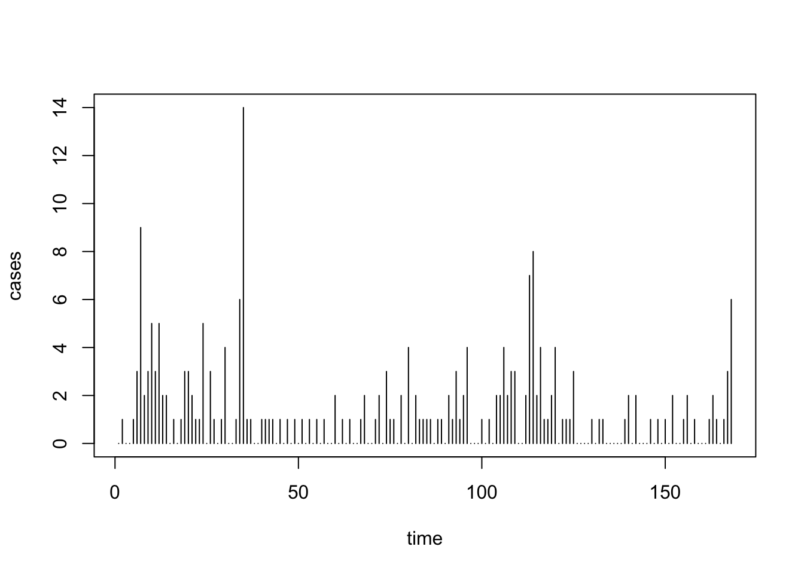
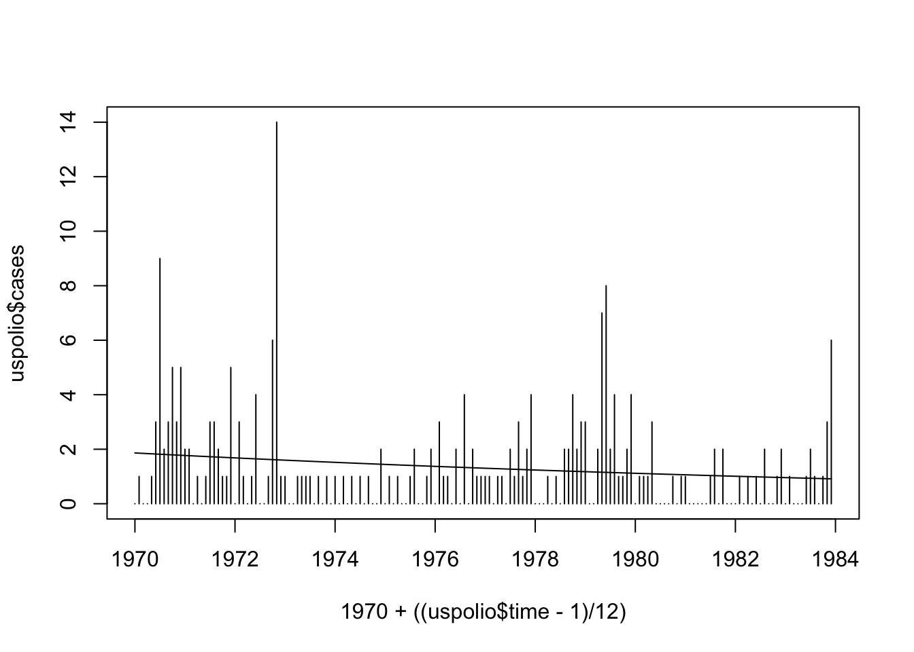
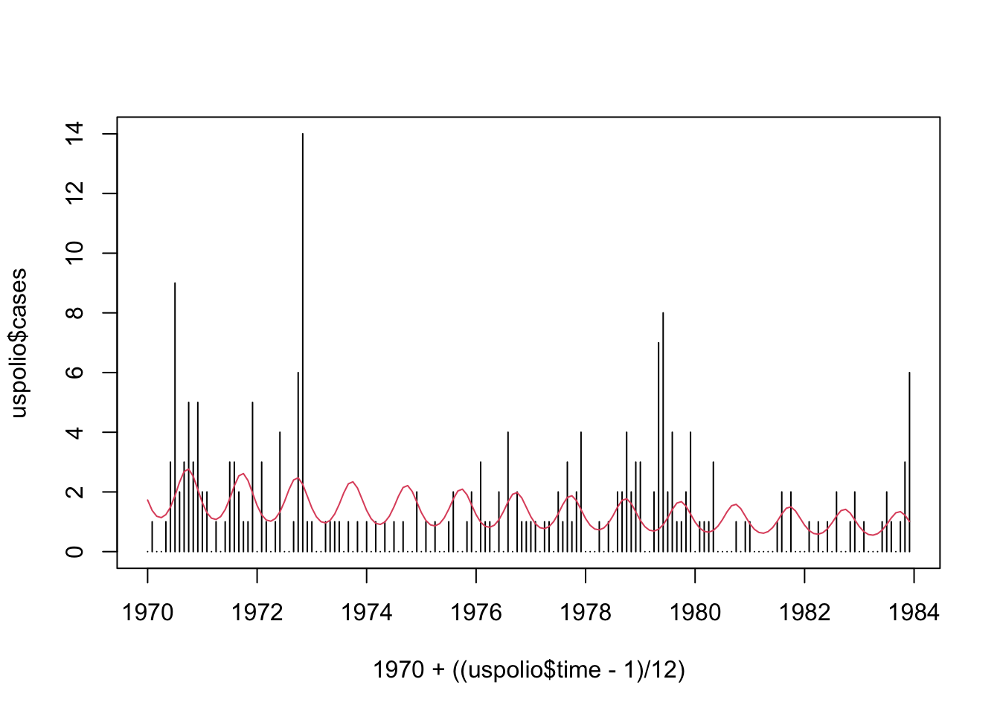
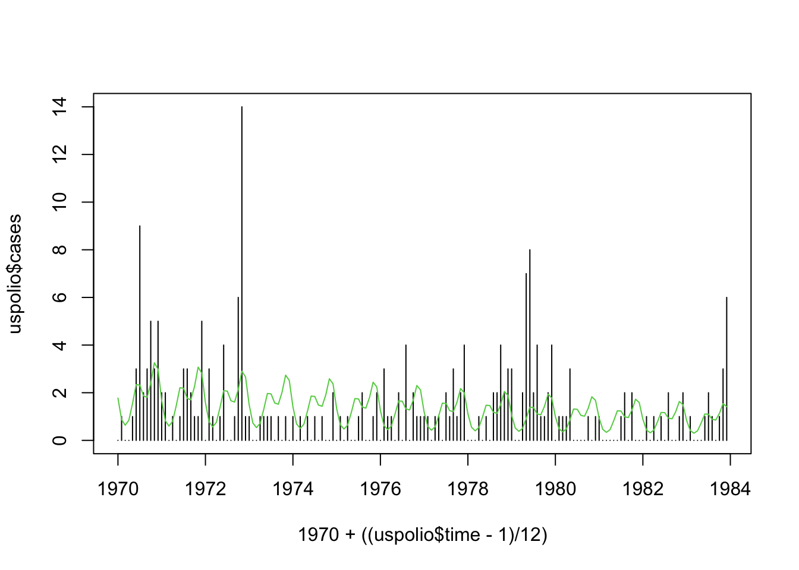
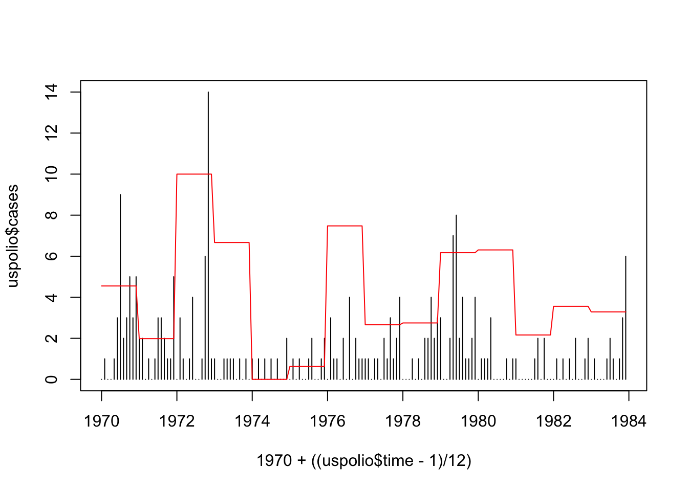
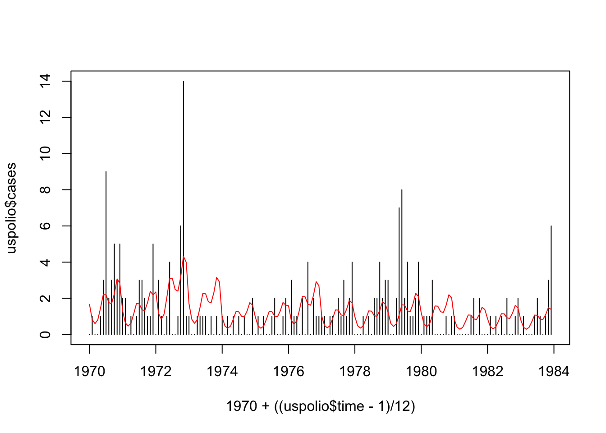

Chapter 2 Estimation
Suppose we are given a dataset that we would like to model using a GLM. After checking the data and possibly performing some exploratory data analysis, we have already chosen a specific form of GLMs that is most suitable for the dataset (say e.g., the Poisson GLM). Now we wish to estimate the parameters of the model; that is, finding the value of \(\boldsymbol{\beta}\) that best explains our data. For this purpose, we can use the maximum likelihood method to obtain an estimate \(\hat{\boldsymbol{\beta}}\).
One advantage of the GLM formulation is that it allows us to derive a solution for the maximum likelihood method directly in the general form, thus unifying the estimation methods for various statistical models. In other words, we do not need to derive solutions for the Poisson GLM, the Binomial GLM, etc. separately. Instead, we can just derive the solution for the general form of the GLMs. The solution for each specific form of the GLM will be an instance of this general solution.
For the rest of this chapter,
2.1 Likelihood Function
Consider the grouped data setup where we have predictors and data with possible replicates \(\left\{(\boldsymbol{x}_{i}, y_{ir_{i}})\right\}_{i\in[1..n], r_{i}\in[1..m_{i}]}\). Recall that under a GLM, given predictors \(\left\{\boldsymbol{x}_{i}\right\}_{i\in[1..n]}\), each response \(y_{ir_{i}}\) is independent of the other \(y_{jr_{j}}\), and of the values of all predictors \(\boldsymbol{x}_{j}\) with \(j\neq i\), so that the joint probability of the data — that is, the likelihood — is given by
\[\begin{equation} L(\boldsymbol{\beta}) = P_{}\left(\left\{y_{ir_{i}}\right\} |\left\{\boldsymbol{x}_{i}\right\}, \boldsymbol{\beta}\right) = P_{}\left(\left\{y_{ir_{i}}\right\} |\left\{\theta_{i}\right\}, \phi\right) = \prod_{i = 1}^{n} \prod_{r_{i} = 1}^{m_{i}} P_{}\left(y_{ir_{i}} |\theta_{i}, \phi\right) \tag{2.1} \end{equation}\]
where
\[\begin{equation} P_{}\left(y_{ir_{i}} |\theta_{i}, \phi\right) = \exp \left( \frac{y_{ir_{i}}\theta_{i} - b(\theta_{i})}{ \phi} + c(y_{ir_{i}}, \phi) \right) \end{equation}\]
with
\[\begin{equation} \theta_{i} = (b')^{-1}(\mu_{i}) = (b')^{-1}(h(\eta_{i})) = (b')^{-1}(h(\boldsymbol{\beta}^{T}\boldsymbol{x}_{i})). \end{equation}\]
2.2 Log-Likelihood Function
The log probability of the data — or log-likelihood — is thus given by
\[\begin{align} l(\boldsymbol{\beta}) & = \log L(\boldsymbol{\beta}) = \log P_{}\left(\left\{y_{ir_{i}}\right\} |\left\{\theta_{i}\right\}, \phi\right) \\ & = \sum_{i} \sum_{r_{i}} \left( \frac{y_{ir_{i}}\theta_{i} - b(\theta_{i})}{\phi} + c(y_{ir_{i}}, \phi) \right) \\ & = \sum_{i} \left( m_{i} \frac{y_{i}\theta_{i} - b(\theta_{i})}{\phi} + \sum_{r_{i}} c(y_{ir_{i}}, \phi) \right) \\ & = \sum_{i} l_{i} \end{align}\]
where we have defined
\[\begin{align} y_i &= \frac{1}{m_i} \sum_{r_{i}} y_{ir_{i}} \\ l_i &= \frac{y_{i}\theta_{i} - b(\theta_{i})}{\phi_i} + \sum_{r_{i}} c(y_{ir_{i}}, \phi) \\ \phi_i &= \phi/m_i. \end{align}\]
2.3 Score Function and Score Equation
The score function is given by
\[\begin{equation} \boldsymbol{S}(\boldsymbol{\beta}) = \frac{\partial l}{\partial \boldsymbol{\beta}^{T}} = \sum_{i} \frac{\partial l_{i}}{\partial \boldsymbol{\beta}^{T}} = \sum_{i} \frac{\partial l_{i}}{\partial \theta_{i}} \frac{\partial \theta_{i}}{\partial \mu_{i}} \frac{\partial \mu_{i}}{\partial \eta_{i}} \frac{\partial \eta_{i}}{\partial \boldsymbol{\beta}^{T}} \tag{2.2} \end{equation}\]
where, recalling that \(\mu_i = b'(\theta_i)\), \(\mathcal{V}(\mu_{i}) = b''(\theta_{i})\), \(\mu_i = h(\eta_i)\) and \(\eta_i = \boldsymbol{\beta}^T\boldsymbol{x}_i\), we have:1
\[\begin{align} \frac{\partial l_{i} }{\partial \theta_{i}} & = \frac{y_{i} - b'(\theta_{i})}{\phi_{i}} = \frac{y_{i} - \mu_{i}}{\phi_{i}} \\ \frac{\partial \theta_{i}}{\partial \mu_{i}} & = 1 / \left( \frac{\partial \mu_{i}}{\partial \theta_{i}} \right) = \frac{1}{b''(\theta_{i})} = \frac{1}{\mathcal{V}(\mu_{i})} \tag{2.3} \\ \frac{\partial \mu_{i}}{\partial \eta_{i}} & = h'(\eta_{i}) \tag{2.4} \\ \frac{\partial \eta_{i}}{\partial \boldsymbol{\beta}^{T}} & = \boldsymbol{x}_{i}. \end{align}\]
The score function is thus given by
\[\begin{align} \boldsymbol{S}(\boldsymbol{\beta}) & = \sum_{i} \left(\frac{y_{i} - \mu_{i}}{\phi_{i}} \right) \; \left(\frac{1}{\mathcal{V}(\mu_{i})} \right) \; h'(\eta_{i}) \;\boldsymbol{x}_{i} \\ & = \frac{1}{\phi} \sum_{i} m_{i}(y_{i} - \mu_{i}) \; \frac{1}{\mathcal{V}(\mu_{i})} \; h'(\eta_{i}) \;\boldsymbol{x}_{i}. \tag{2.5} \end{align}\]
The maximum likelihood estimate \(\hat{\boldsymbol{\beta}}\) must then satisfy the score equation:
\[\begin{equation} \boldsymbol{S}(\hat{\boldsymbol{\beta}}) = 0. \tag{2.6} \end{equation}\]
Note that the dispersion parameter \(\phi\) cancels from the score equation, which implies that \(\hat{\boldsymbol{\beta}}\) does not depend on \(\phi\). This is another important property of EDFs.
2.3.1 Special Case: Natural Link
For the natural link, \(\theta_{i} = \eta_{i}\), so Equations (2.3) and (2.4) combine to give
\[\begin{equation} \frac{h'(\eta_i)}{\mathcal{V}(\mu_i)} = \frac{\partial\theta_{i}}{\partial \mu_{i}} \frac{\partial\mu_{i}}{\partial \eta_{i}} = \frac{\partial\theta_{i}}{\partial \eta_{i}} = 1. \end{equation}\]
The score function thus simplifies to
\[\begin{equation} \boldsymbol{S}(\boldsymbol{\beta}) = \frac{1}{\phi}\sum_{i} m_{i}(y_{i} - \mu_{i})\;\boldsymbol{x}_{i}. \tag{2.7} \end{equation}\]
2.4 Fisher Information
To solve the score equation, we will also need the second derivative of the log-likelihood. Its negative is called the Observed Fisher Information, defined as
\[\begin{equation} \boldsymbol{F}_{\text{obs}}(\boldsymbol{\beta}) = - \frac{\partial^{2} l}{\partial\boldsymbol{\beta}^{T}\partial\boldsymbol{\beta}} = - \frac{\partial \boldsymbol{S}}{\partial \boldsymbol{\beta}}. \tag{2.8} \end{equation}\]
Note that, at the MLE, \(\boldsymbol{F}_{\text{obs}}(\hat{\boldsymbol{\beta}})\) is positive by definition. Because it is a function of the data \(\left\{y_{i}\right\}\), \(\boldsymbol{F}_{\text{obs}}\) has a probability distribution. In practice, the Observed Fisher Information is often approximated by the Expected Fisher Information, otherwise known simply as the Fisher Information:2
\[\begin{equation} \boldsymbol{F}(\boldsymbol{\beta}) = E \left[ - \frac{\partial \boldsymbol{S} }{ \partial \boldsymbol{\beta}} \right] \tag{2.9} \end{equation}\]
where the expectation is taken over the joint probability distribution of the data \(P_{}\left(\left\{y_{ir_{i}}\right\} |\boldsymbol{\beta}, \left\{\boldsymbol{x}_{i}\right\}\right)\).
2.5 Example: Poisson Regression
We look at two example calculations of the score function and Fisher Information for Poisson Regression, that is we have
- \(y |\boldsymbol{x}, \boldsymbol{\beta} \sim \text{Poi}(\lambda(\boldsymbol{x}, \boldsymbol{\beta}))\)
- \(\phi = 1\).
In this example, let us assume \(m_i = 1\), i.e., the data are ungrouped.
2.5.1 With Natural Link
We have that: \(\lambda(\boldsymbol{x}, \boldsymbol{\beta}) = \mu(\boldsymbol{x}, \boldsymbol{\beta}) = h(\eta(\boldsymbol{x}, \boldsymbol{\beta})) = e^{\eta(\boldsymbol{x}, \boldsymbol{\beta})} = e^{\boldsymbol{\beta}^T\boldsymbol{x}}\).
Equation (2.7) then gives
\[\begin{equation} \boldsymbol{S}(\boldsymbol{\beta}) = \sum_{i} (y_{i} - e^{\boldsymbol{\beta}^{T}\boldsymbol{x}_{i}})\;\boldsymbol{x}_{i} \end{equation}\]
while Equation (2.8) gives
\[\begin{equation} \boldsymbol{F}_{\text{obs}}(\boldsymbol{\beta}) = \sum_{i} e^{\boldsymbol{\beta}^{T}\boldsymbol{x}_{i}}\;\boldsymbol{x}_{i}\boldsymbol{x}_{i}^{T}. \end{equation}\]
Note that this does not depend on the data, so that Equation (2.9) gives
\[\begin{equation} \boldsymbol{F}(\boldsymbol{\beta}) = {\mathrm E}[\boldsymbol{F}_{\text{obs}}(\boldsymbol{\beta})] = \boldsymbol{F}_{\text{obs}}(\boldsymbol{\beta}). \end{equation}\]
2.5.2 With Identity Link
The identity link is defined such that \(h(\eta) = \eta\).
In this case, we have that:
- \(\lambda(\boldsymbol{x}, \boldsymbol{\beta}) = \mu(\boldsymbol{x}, \boldsymbol{\beta}) = h(\eta(\boldsymbol{x}, \boldsymbol{\beta})) = \eta(\boldsymbol{x}, \boldsymbol{\beta}) = \boldsymbol{\beta}^T \boldsymbol{x}\).
- \(\mathcal{V}(\mu) = \mu\) (see Poisson example in EDF chapter).
- \(h'(\eta) = 1\).
Equation (2.5) thus gives
\[\begin{align} \boldsymbol{S}(\boldsymbol{\beta}) & = \sum_{i} (y_{i} - \mu_{i})\;\frac{1}{\mu_{i}}\;1 \;\boldsymbol{x}_{i} \\ & = \sum_{i} (y_{i} - \boldsymbol{\beta}^{T}\boldsymbol{x}_{i}) \;\frac{1}{\boldsymbol{\beta}^{T}\boldsymbol{x}_{i}}\;\boldsymbol{x}_{i} \\ & = \sum_{i} \left( \frac{y_{i}}{ \boldsymbol{\beta}^{T}\boldsymbol{x}_{i}} - 1 \right) \;\boldsymbol{x}_{i}. \end{align}\]
Using Equation (2.8) and the chain rule, we can obtain the Observed Fisher Information:
\[\begin{equation} \boldsymbol{F}_{\text{obs}}(\boldsymbol{\beta}) = \sum_{i} \frac{y_{i}}{ (\boldsymbol{\beta}^{T}\boldsymbol{x}_{i})^{2}}\;\boldsymbol{x}_{i}\boldsymbol{x}_{i}^{T}. \end{equation}\]
Hence, the Fisher Information is:
\[\begin{align} \boldsymbol{F}(\boldsymbol{\beta}) & = {\mathrm E}[\boldsymbol{F}_{\text{obs}}(\boldsymbol{\beta})] \\ & = \textrm{E} \left[ \sum_{i} \frac{Y_{i}}{(\boldsymbol{\beta}^{T}\boldsymbol{x}_{i})^{2}} \;\boldsymbol{x}_{i}\boldsymbol{x}_{i}^{T} \right] \\ & = \sum_{i} \frac{{\mathrm E}[Y_{i} |\boldsymbol{\beta}, \boldsymbol{x}_{i}]}{ (\boldsymbol{\beta}^{T}\boldsymbol{x}_{i})^{2}} \;\boldsymbol{x}_{i}\boldsymbol{x}_{i}^{T} \\ & = \sum_{i} \frac{\boldsymbol{\beta}^{T}\boldsymbol{x}_{i} }{ (\boldsymbol{\beta}^{T}\boldsymbol{x}_{i})^{2}} \;\boldsymbol{x}_{i}\boldsymbol{x}_{i}^{T} \\ & = \sum_{i} \frac{1 }{ \boldsymbol{\beta}^{T}\boldsymbol{x}_{i}}\;\boldsymbol{x}_{i}\boldsymbol{x}_{i}^{T}. \end{align}\]
Note that \(\boldsymbol{F}(\boldsymbol{\beta}) \neq \boldsymbol{F}_{\text{obs}}(\boldsymbol{\beta})\) in this case.
2.6 Properties of \(\boldsymbol{S}(\boldsymbol{\beta})\) and \(\boldsymbol{F}(\boldsymbol{\beta})\)
Having defined the score function \(\boldsymbol{S}(\boldsymbol{\beta})\) and the Fisher information \(\boldsymbol{F}(\boldsymbol{\beta})\), in this section we will investigate some of their properties. First, let us define \(\displaystyle S_i(\boldsymbol{\beta}) = \frac{\partial l_i}{\partial \boldsymbol{\beta}}\). Then we have \(\boldsymbol{S}(\boldsymbol{\beta}) = \sum_{i} \boldsymbol{S}_{i}(\boldsymbol{\beta})\).
2.6.1 Expectation of \(\boldsymbol{S}(\boldsymbol{\beta})\)
The expectation of \(\boldsymbol{S}(\boldsymbol{\beta})\) can be computed from Equations (2.2) and (2.5) as follows:
\[\begin{align} {\mathrm E}[\boldsymbol{S}(\boldsymbol{\beta})] & = \sum_{i} {\mathrm E}[\boldsymbol{S}_{i}(\boldsymbol{\beta})] \\ & = \sum_{i} \frac{{\mathrm E}[Y_{i} |\boldsymbol{\beta}, \boldsymbol{x}_{i}] - \mu_{i}}{ \phi_{i}} \frac{1}{\mathcal{V}(\mu_{i})} h'(\eta_{i})\;\boldsymbol{x}_i \\ & = 0 \tag{2.10} \end{align}\]
because \({\mathrm E}[Y_{i} |\boldsymbol{\beta}, \boldsymbol{x}_{i}] = \mu_{i}\).
2.6.2 Variance of \(\boldsymbol{S}(\boldsymbol{\beta})\)
Using Equation (2.5) and the properties of covariance matrices in Section 1.2, we can calculate the variance of \(\boldsymbol{S}(\boldsymbol{\beta})\) as follows:
\[\begin{align} {\mathrm{Var}}[\boldsymbol{S}(\boldsymbol{\beta})] & = \sum_{i} {\mathrm{Var}}[\boldsymbol{S}_{i}(\boldsymbol{\beta})] \\ & = \sum_{i} \mathrm{Var} \left[ \frac{h'(\eta_{i})}{\phi_i \mathcal{V}(\mu_{i})} \boldsymbol{x}_{i} (Y_{i} - \mu_{i}) \right] \\ & = \sum_{i} \left( \frac{h'(\eta_{i})}{\phi_i \mathcal{V}(\mu_{i})} \boldsymbol{x}_{i} \right) {\mathrm{Var}}[Y_{i} - \mu_{i}] \left( \frac{h'(\eta_{i})}{\phi_i \mathcal{V}(\mu_{i})} \boldsymbol{x}_{i}^T \right) \\ &= \sum_{i} \left( \frac{h'(\eta_{i})^2}{\phi_i^2 \mathcal{V}(\mu_{i})^2} \boldsymbol{x}_{i} \boldsymbol{x}_{i}^T \right) {\mathrm{Var}}[Y_{i}]. \end{align}\]
Note that in the first equality above, we can break the variance into sum of smaller components due to the independent data assumption.
Now using \({\mathrm{Var}}[Y_i] = \phi_i \mathcal{V}(\mu_{i})\), we can obtain the expression for \({\mathrm{Var}}[\boldsymbol{S}(\boldsymbol{\beta})]\):
\[\begin{equation} {\mathrm{Var}}[\boldsymbol{S}(\boldsymbol{\beta})] = \sum_{i} \frac{h'(\eta_{i})^2}{\phi_i \mathcal{V}(\mu_{i})} \boldsymbol{x}_{i} \boldsymbol{x}_{i}^T. \tag{2.11} \end{equation}\]
2.6.3 Properties of \(\boldsymbol{F}(\boldsymbol{\beta})\)
Recall from Equation (2.9) that \(\displaystyle \boldsymbol{F}(\boldsymbol{\beta}) = E \left[ - \frac{\partial \boldsymbol{S} }{ \partial \boldsymbol{\beta}} \right] = - E \left[ \frac{\partial^{2} l}{\partial\boldsymbol{\beta}^{T}\partial\boldsymbol{\beta}} \right]\).
We will first show that \(\displaystyle E \left[ \frac{\partial^{2} l}{\partial\boldsymbol{\beta}^{T}\partial\boldsymbol{\beta}} \right] = E \left[ - \frac{\partial l}{\partial \boldsymbol{\beta}^{T}} \frac{\partial l}{\partial\boldsymbol{\beta}} \right]\).
2.6.3.1 An Important Identity
Let \(\rho = e^l\), where \(l\) is the log-likelihood, so that \(\rho = L(\boldsymbol{\beta}) = P_{}\left(\left\{y_{ir_{i}}\right\} |\left\{\boldsymbol{x}_{i}\right\}, \boldsymbol{\beta}\right)\) is the likelihood/probability of the data. Then
\[\begin{equation} \frac{\partial l}{\partial \boldsymbol{\beta}^{T}} = \frac{\partial l}{\partial \rho}\frac{\partial \rho}{\partial \boldsymbol{\beta}^{T}} = \frac{1}{\rho}\frac{\partial \rho}{\partial \boldsymbol{\beta}^{T}}. \end{equation}\]
Using the product rule and chain rule, we have
\[\begin{align} \frac{\partial^{2} l}{\partial\boldsymbol{\beta}^{T}\partial \boldsymbol{\beta}} & = - \frac{1}{\rho^{2}} \frac{\partial \rho}{\partial \boldsymbol{\beta}^{T}} \frac{\partial \rho}{\partial \boldsymbol{\beta}} + \frac{1}{\rho} \frac{\partial^{2} \rho}{\partial \boldsymbol{\beta}^{T}\partial\boldsymbol{\beta}} \\ & = - \frac{1}{\rho^{2}} \left( \frac{\partial \rho}{\partial l} \frac{\partial l}{\partial \boldsymbol{\beta}^{T}} \right) \left( \frac{\partial \rho}{\partial l} \frac{\partial l}{\partial \boldsymbol{\beta}} \right) + \frac{1}{\rho} \frac{\partial^{2} \rho}{\partial \boldsymbol{\beta}^{T}\partial\boldsymbol{\beta}} \\ & = - \frac{1}{\rho^{2}} \left( \rho \frac{\partial l}{\partial \boldsymbol{\beta}^{T}} \right) \left( \rho \frac{\partial l}{\partial \boldsymbol{\beta}} \right) + \frac{1}{\rho} \frac{\partial^{2} \rho}{\partial \boldsymbol{\beta}^{T}\partial\boldsymbol{\beta}} \\ & = - \frac{\partial l}{\partial \boldsymbol{\beta}^{T}} \frac{\partial l}{\partial \boldsymbol{\beta}} + \frac{1}{\rho} \frac{\partial^{2} \rho}{\partial \boldsymbol{\beta}^{T}\partial\boldsymbol{\beta}}. \end{align}\]
Note that the expectation (over the data) of the second term is
\[\begin{equation} \mathrm{E} \left[ \frac{1}{\rho} \frac{\partial^{2} \rho}{\partial \boldsymbol{\beta}^{T}\partial\boldsymbol{\beta}} \right] = \int \rho \;\frac{1}{\rho} \frac{\partial^{2} \rho}{\partial \boldsymbol{\beta}^{T}\partial\boldsymbol{\beta}} = \int \frac{\partial^{2} \rho}{\partial \boldsymbol{\beta}^{T}\partial\boldsymbol{\beta}} = \frac{\partial^{2}}{\partial \boldsymbol{\beta}^{T}\partial\boldsymbol{\beta}} \int \rho = \frac{\partial^{2}}{\partial \boldsymbol{\beta}^{T}\partial\boldsymbol{\beta}} \;1 = 0. \end{equation}\]
Thus, we have:
\[\begin{equation} E \left[ \frac{\partial^{2} l}{\partial\boldsymbol{\beta}^{T}\partial\boldsymbol{\beta}} \right] = E \left[ - \frac{\partial l}{\partial \boldsymbol{\beta}^{T}} \frac{\partial l}{\partial\boldsymbol{\beta}} \right]. \tag{2.12} \end{equation}\]
2.6.3.2 Relating \(\boldsymbol{F}(\boldsymbol{\beta})\) and \({\mathrm{Var}}[\boldsymbol{S}(\boldsymbol{\beta})]\)
Using Equation (2.12), we have that:
\[\begin{align} \boldsymbol{F}(\boldsymbol{\beta}) & = - \mathrm{E} \left[ \frac{\partial^{2} l}{\partial \boldsymbol{\beta}^{T}\partial\boldsymbol{\beta}} \right] = \mathrm{E} \left[ \frac{\partial l}{\partial \boldsymbol{\beta}^{T}} \frac{\partial l}{\partial\boldsymbol{\beta}} \right] \\ & = {\mathrm E}[\boldsymbol{S}(\boldsymbol{\beta})\boldsymbol{S}(\boldsymbol{\beta})^{T}] \\ & = {\mathrm{Var}}[\boldsymbol{S}(\boldsymbol{\beta})] + {\mathrm E}[\boldsymbol{S}(\boldsymbol{\beta})] \;{\mathrm E}[\boldsymbol{S}(\boldsymbol{\beta})]^{T} \\ & = {\mathrm{Var}}[\boldsymbol{S}(\boldsymbol{\beta})] \end{align}\]
where the last equality is due to \({\mathrm E}[\boldsymbol{S}(\boldsymbol{\beta})] = 0\).
Therefore, an important property of the Fisher Information is that it is equal to the variance of the score function, whose expression is given in Equation (2.11).
2.6.3.3 Special Case: Natural Link
For the natural link, recall that \(\displaystyle \frac{h'(\eta_i)}{\mathcal{V}(\mu_i)} = 1\). So we have:
\[\begin{equation} \boldsymbol{S}(\boldsymbol{\beta}) = \sum_i \frac{1}{\phi_i} (y_i - h(\eta_i))\boldsymbol{x}_i. \end{equation}\]
Let \(\displaystyle \boldsymbol{S}_i = \frac{1}{\phi_i} (y_i - h(\eta_i))\boldsymbol{x}_i\). We have \(\boldsymbol{S} = \sum_i \boldsymbol{S}_i\) and thus:
\[\begin{align} \boldsymbol{F}_{\text{obs}}(\boldsymbol{\beta}) & = - \frac{\partial \boldsymbol{S}}{\partial \boldsymbol{\beta}} = - \sum_i \frac{\partial \boldsymbol{S}_i}{\partial \boldsymbol{\beta}} = - \sum_i \frac{\partial \boldsymbol{S}_i}{\partial \eta_i} \frac{\partial \eta_i}{\partial \boldsymbol{\beta}} = \sum_i \frac{h'(\eta_i)}{\phi_i} \boldsymbol{x}_i\boldsymbol{x}_i^T \\ \boldsymbol{F}(\boldsymbol{\beta}) & = {\mathrm{Var}}[\boldsymbol{S}(\boldsymbol{\beta})] = \sum_i \frac{h'(\eta_i)}{\phi_i}\boldsymbol{x}_i\boldsymbol{x}_i^T . \end{align}\]
Thus, for the natural link, we see that \(\boldsymbol{F}(\boldsymbol{\beta}) = \boldsymbol{F}_{\text{obs}}(\boldsymbol{\beta})\).
2.7 Matrix Notation
For the next section, it is useful to establish a condensed, matrix notation for some of the previous quantities, analogous to the matrix notation used for linear models.
Let \(\boldsymbol{Y}\in{\mathbb R}^{n}\) be the random vector with components \(Y_{i}\), the response values. This is exactly the same quantity as in the linear model case.
Let \(\boldsymbol{X}\in{\mathbb R}^{n\times p}\) be the design matrix, the matrix with components \(x_{i, a}\), the value of the \(a^{\text{th}}\) component of the predictor vector for the \(i^{\text{th}}\) data point. This is exactly the same quantity as in the linear model case. This matrix is sometimes called the model matrix.
Let \(\boldsymbol{\mu}\in{\mathbb R}^{n}\) be the vector with components \(\mu_{i} = h(\boldsymbol{\beta}^{T}x_{i})\), so that \(\boldsymbol{\mu} = {\mathrm E}[\boldsymbol{Y}]\).
Let \(\boldsymbol{D}\in {\mathbb R}^{n\times n}\) be the diagonal matrix with components \(D_{ii} = h'(\eta_{i})\). For example, if \(h(\eta) = e^{\eta}\), then
\[\begin{equation} \boldsymbol{D} = \begin{pmatrix} e^{\boldsymbol{\beta}^{T}x_{1}} & 0 & \cdots & 0 \\ 0 & \ddots & \ddots & \vdots \\ \vdots & \ddots & \ddots & 0 \\ 0 & \cdots & 0 & e^{\boldsymbol{\beta}^{T}x_{n}} \end{pmatrix}. \end{equation}\]
- Let \(\boldsymbol{\Sigma}\in{\mathbb R}^{n\times n}\) be the covariance matrix for \(\boldsymbol{Y}\), with components:
\[\begin{equation} \Sigma_{ij} = \text{Cov}[Y_{i}, Y_{j}] = \text{Var}[Y_{i}]\;\delta_{ij} = \phi_{i}\mathcal{V}(\mu_{i})\;\delta_{ij}. \end{equation}\]
That is,
\[\begin{equation} \boldsymbol{\Sigma} = \begin{pmatrix} \text{Var}[Y_{1}] & 0 & \cdots & 0 \\ 0 & \ddots & \ddots & \vdots \\ \vdots & \ddots & \ddots & 0 \\ 0 & \cdots & 0 & \text{Var}[Y_{n}] \end{pmatrix} = \begin{pmatrix} \phi_{1}\mathcal{V}(\mu_{1}) & 0 & \cdots & 0 \\ 0 & \ddots & \ddots & \vdots \\ \vdots & \ddots & \ddots & 0 \\ 0 & \cdots & 0 & \phi_{n}\mathcal{V}(\mu_{n}) \end{pmatrix}. \end{equation}\]
2.7.1 Score Function and Fisher Information
Recall that
\[\begin{align} \boldsymbol{S}(\boldsymbol{\beta}) & = \sum_{i} \left( \frac{y_{i} - \mu_{i}}{ \phi_{i}\mathcal{V}(\mu_{i})} \right) h'(\eta_{i}) \;\boldsymbol{x}_{i} \\ \boldsymbol{F}(\boldsymbol{\beta}) & = \sum_{i} \frac{h'(\eta_{i})^{2}}{ \phi_{i}\mathcal{V}(\mu_{i})} \;\boldsymbol{x}_{i} \boldsymbol{x}_{i}^{T}. \end{align}\]
In terms of the matrix notation, these become
\[\begin{align} \boldsymbol{S} & = \boldsymbol{X}^{T}\boldsymbol{D}\boldsymbol{\Sigma}^{-1}(\boldsymbol{Y} - \boldsymbol{\mu}) \\ \boldsymbol{F} & = \boldsymbol{X}^{T}\boldsymbol{D}^{T}\boldsymbol{\Sigma}^{-1}\boldsymbol{D}\boldsymbol{X}. \end{align}\]
2.7.2 Natural Link
Note that for the natural link,
\[\begin{equation} \frac{\partial \theta_{i}}{\partial \eta_{i}} = \frac{h'(\eta_{i})}{\mathcal{V}(\mu_{i})} = 1. \end{equation}\]
Thus, with \(\phi_{i} = \phi/m_{i}\), we have:
\[\begin{equation} h'(\eta_{i}) = \mathcal{V}(\mu_{i}) = \frac{\text{Var}[Y_{i}] }{ \phi_{i}} = m_{i}\frac{{\mathrm{Var}}[Y_{i}] }{ \phi}. \end{equation}\]
Now let \(\boldsymbol{G} \in {\mathbb R}^{n \times n}\) be the diagonal matrix with components \(m_{i}\delta_{ij}\), known as the grouping matrix. Then
\[\begin{equation} \boldsymbol{D} = \frac{1}{\phi} \boldsymbol{G}\boldsymbol{\Sigma} = \frac{1}{\phi}\boldsymbol{\Sigma} \boldsymbol{G}, \end{equation}\]
and therefore,
\[\begin{align} \boldsymbol{S}(\boldsymbol{\beta}) & = \frac{1}{\phi} \boldsymbol{X}^{T}\boldsymbol{G}(\boldsymbol{Y} - \boldsymbol{\mu}) \\ \boldsymbol{F}(\boldsymbol{\beta}) & = \frac{1}{\phi^{2}} \boldsymbol{X}^{T}\boldsymbol{G}^{T}\boldsymbol{\Sigma}\boldsymbol{G}\boldsymbol{X}. \end{align}\]
2.8 Iterative Solution of \(\boldsymbol{S}(\hat{\boldsymbol{\beta}}) = 0\)
So far we have seen how to set up the score equation for the maximum likelihood estimate. We have also proven some of its properties as well as those of the Fisher Information. We now turn to the question of how to solve the score equation. In general, this cannot be done in closed form, except in rare cases. So we need to turn to numerical methods implemented on a computer.
We have the same two options here as in the binary regression case: we can try to optimise \(l\) directly, or we can attempt to solve the score equation. There are many algorithms that can be used to perform these tasks. Here we focus on one: Iteratively Reweighted Least Squares (IRLS), also known as Iterative Weighted Least Squares (IWLS).3
We start by recalling the Newton-Raphson method for finding the zero of a function. Note that we wish to solve the equation:
\[\begin{equation} \boldsymbol{S}(\hat{\boldsymbol{\beta}}) = 0. \end{equation}\]
We then approximate \(\boldsymbol{S}\) linearly about some point \(\boldsymbol{\beta}_{0}\):
\[\begin{equation} \boldsymbol{S}(\boldsymbol{\beta}_{0} + \delta\boldsymbol{\beta}_{0}) = \boldsymbol{S}(\boldsymbol{\beta}_{0}) + \frac{\partial \boldsymbol{S}(\boldsymbol{\beta}_{0})}{\partial\boldsymbol{\beta}}\delta\boldsymbol{\beta}_{0} + \mathcal{O}(\delta\boldsymbol{\beta}_{0}^{2}) \end{equation}\]
where the reason for the subscript \(0\) will become apparent soon. In the case when \(\boldsymbol{S}(\boldsymbol{\beta}_{0} + \delta\boldsymbol{\beta}_{0}) = 0\) (such as the case we are interested in), we have approximately that:
\[\begin{equation} \frac{\partial \boldsymbol{S}(\boldsymbol{\beta}_{0})}{\partial\boldsymbol{\beta}}\delta\boldsymbol{\beta}_{0} = - \boldsymbol{S}(\boldsymbol{\beta}_{0}). \tag{2.13} \end{equation}\]
Now in our case,
\[\begin{equation} -\frac{\partial \boldsymbol{S}(\boldsymbol{\beta}_{0})}{\partial\boldsymbol{\beta}} = \boldsymbol{F}_{\text{obs}}(\boldsymbol{\beta}_{0}), \end{equation}\]
so Equation (2.13) becomes
\[\begin{equation} \boldsymbol{F}_{\text{obs}}(\boldsymbol{\beta}_{0})\delta\boldsymbol{\beta}_{0} = \boldsymbol{S}(\boldsymbol{\beta}_{0}), \end{equation}\]
or equivalently,
\[\begin{equation} \delta\boldsymbol{\beta}_{0} = \left( \boldsymbol{F}_{\text{obs}}(\boldsymbol{\beta}_{0}) \right)^{-1} \boldsymbol{S}(\boldsymbol{\beta}_{0}). \end{equation}\]
This then gives us a new value:
\[\begin{equation} \boldsymbol{\beta}_{1} = \boldsymbol{\beta}_{0} + \delta\boldsymbol{\beta}_{0} = \boldsymbol{\beta}_{0} + \left( \boldsymbol{F}_{\text{obs}}(\boldsymbol{\beta}_{0}) \right)^{-1} \boldsymbol{S}(\boldsymbol{\beta}_{0}). \end{equation}\]
Then we can iterate the steps above for \(m = 1, 2, \ldots,\)
\[\begin{equation} \boldsymbol{\beta}_{m+1} = \boldsymbol{\beta}_{m} + \delta\boldsymbol{\beta}_{m} \end{equation}\]
where
\[\begin{equation} \delta\boldsymbol{\beta}_{m} = \left( \boldsymbol{F}_{\text{obs}}(\boldsymbol{\beta}_{m}) \right)^{-1} \boldsymbol{S}(\boldsymbol{\beta}_{m}). \end{equation}\]
Because \(\boldsymbol{F}_{\text{obs}}\) is hard to find and hard to invert in general, we approximate it with the expected Fisher Information. This is known as the Fisher scoring method, where we compute \(\delta\boldsymbol{\beta}_{m}\) by:
\[\begin{equation} \delta\boldsymbol{\beta}_{m} = \left( \boldsymbol{F}(\boldsymbol{\beta}_{m}) \right)^{-1} \boldsymbol{S}(\boldsymbol{\beta}_{m}). \tag{2.14} \end{equation}\]
2.8.1 Iteratively Reweighted Least Squares (IRLS)
Now we will use Equation (2.14) to derive the IRLS method in matrix notation. From Equation (2.14), we have that
\[\begin{equation} \boldsymbol{F}(\boldsymbol{\beta}_{m})\delta\boldsymbol{\beta}_{m} = \boldsymbol{S}(\boldsymbol{\beta}_{m}) \end{equation}\]
or equivalently that
\[\begin{equation} \boldsymbol{F}(\boldsymbol{\beta}_{m})\boldsymbol{\beta}_{m+1} = \boldsymbol{F}(\boldsymbol{\beta}_{m})\boldsymbol{\beta}_{m} + \boldsymbol{S}(\boldsymbol{\beta}_{m}). \tag{2.15} \end{equation}\]
Using the matrix notation in Section 2.7.1 and defining \(\boldsymbol{W} = \boldsymbol{D}^{T}\boldsymbol{\Sigma}^{-1}\boldsymbol{D}\), we can write
\[\begin{equation} \boldsymbol{F} = \boldsymbol{X}^{T}\boldsymbol{D}^{T}\boldsymbol{\Sigma}^{-1}\boldsymbol{D}\boldsymbol{X} = \boldsymbol{X}^{T}\boldsymbol{W}\boldsymbol{X} \end{equation}\]
and
\[\begin{equation} \boldsymbol{S} = \boldsymbol{X}^{T}\boldsymbol{D}\boldsymbol{\Sigma}^{-1}(\boldsymbol{Y} - \boldsymbol{\mu}) = \boldsymbol{X}^{T}\boldsymbol{D}^T\boldsymbol{\Sigma}^{-1}(\boldsymbol{Y} - \boldsymbol{\mu}) = \boldsymbol{X}^{T}\boldsymbol{W}\boldsymbol{D}^{-1}(\boldsymbol{Y} - \boldsymbol{\mu}), \end{equation}\]
since \(\boldsymbol{D}\) is a diagonal matrix.
Thus, using the subscript \(m\) to denote the value of a quantity evaluated using \(\boldsymbol{\beta}_{m}\) or derived quantities, we can calculate the right hand side of Equation (2.15) from:
\[\begin{equation} \boldsymbol{F}_{m}\boldsymbol{\beta}_{m} + \boldsymbol{S}_{m} = \boldsymbol{X}^{T}\boldsymbol{W}_{m}\boldsymbol{X}\boldsymbol{\beta}_{m} + \boldsymbol{X}^{T}\boldsymbol{W}_{m}\boldsymbol{D}_{m}^{-1}(\boldsymbol{Y} - \boldsymbol{\mu}_{m}) = \boldsymbol{X}^{T}\boldsymbol{W}_{m}\boldsymbol{\tilde{Y}}_{m} \end{equation}\]
where
\[\begin{equation} \boldsymbol{\tilde{Y}}_{m} = \boldsymbol{X}\boldsymbol{\beta}_{m} + \boldsymbol{D}_{m}^{-1}(\boldsymbol{Y} - \boldsymbol{\mu}_{m}) \end{equation}\]
are the so-called working observations.
Now replacing \(\boldsymbol{F}(\boldsymbol{\beta}_{m}) = \boldsymbol{F}_{m} = \boldsymbol{X}^{T}\boldsymbol{W}_{m}\boldsymbol{X}\) in the left hand side of Equation (2.15), we have that
\[\begin{equation} (\boldsymbol{X}^{T}\boldsymbol{W}_{m}\boldsymbol{X}) \boldsymbol{\beta}_{m+1} = \boldsymbol{X}^{T}\boldsymbol{W}_{m}\boldsymbol{\tilde{Y}}_{m} \end{equation}\]
or
\[\begin{equation} \boldsymbol{\beta}_{m+1} = (\boldsymbol{X}^{T}\boldsymbol{W}_{m}\boldsymbol{X})^{-1}\boldsymbol{X}^{T}\boldsymbol{W}_{m}\boldsymbol{\tilde{Y}}_{m}. \tag{2.16} \end{equation}\]
Thus, to find a solution for \(\boldsymbol{S}(\boldsymbol{\beta}) = 0\), we can start from an arbitrary point \(\boldsymbol{\beta}_{0}\) and iteratively apply Equation (2.16) until a convergence criterion is met.
This sequence of iterated operations is called iteratively reweighted least squares or iterative weighted least squares since each iteration is the solution to the following least squares problem: minimize the quantity \(l_{m}(\boldsymbol{\beta})\) with respect to \(\boldsymbol{\beta}\), where
\[\begin{equation} l_{m}(\boldsymbol{\beta}) = (\boldsymbol{\tilde{Y}}_{m} - \boldsymbol{X}\boldsymbol{\beta})^{T} \boldsymbol{W}_{m} (\boldsymbol{\tilde{Y}}_{m} - \boldsymbol{X}\boldsymbol{\beta}) \end{equation}\]
and \(\boldsymbol{W}_{m}\) is known as the weight matrix.
2.8.2 IRLS Pseudo-Code
We now give a pseudo-code below for running IRLS. Note that the code will not run without computing \(\boldsymbol{\mu}\), \(\boldsymbol{D}\) and \(\boldsymbol{W}\) using a specific example.
IRLS <- function(Y, X, phi, epsilon) {
# Pick an initial value for hatBeta
hatbeta = initializeBeta()
# Set up convergence
converged = false
# Loop as long as convergence condition is not satisfied
while not converged loop
{
# Compute mu, D, and Sigma (use h, h', V as subroutines)
mu = computeMu(hatBeta, X)
D = computeD(hatBeta, X)
Sigma = computeSigma(hatBeta, phi)
# Compute the weight matrix W
W = t(D) %*% solve(Sigma) %*% D
# Compute the working observations tildeY
tildeY = X %*% hatBeta + solve(D) %*% (Y - mu)
# Compute the new value of hatBeta
newHatBeta = solve(t(X) %*% W %*% X) %*% (t(X) %*% W %*% tildeY)
# Check whether we have converged
converged = ((norm(newHatBeta - hatBeta) / norm(hatBeta)) <= epsilon)
# Store new value of hatBeta ready for next iteration or return
hatBeta = newHatBeta
}
return hatBeta
}2.9 Practical Example: US Polio Data
In this example, we will use the US Polio data discussed last term to fit the GLMs. Recall that this dataset is a matrix of count data, giving the monthly number of polio cases in the United States from 1970 to 1983. We will convert this dataset into a matrix with two columns:
- covariate
timein the first column ranging from 1 to 168, starting with January 1970. - response
casesin the second column, indicating the monthly number of polio cases.
We now load the data from the library gamlss.data and do the conversion.
##
## Attaching package: 'gamlss.data'## The following object is masked from 'package:datasets':
##
## sleepdata("polio")
uspolio <- as.data.frame(matrix(c(1:168, t(polio)), ncol=2))
colnames(uspolio) <- c("time", "cases")First, let us plot the data.

Note that the main question we wish to consider is: How has Polio incidence changed over time?
Since this is count data, we begin by fitting a Poisson model with a linear time trend.
# Poisson model with linear time trend
polio.glm <- glm(cases ~ time, family=poisson(link=log), data=uspolio)
# Look at the model summary
summary(polio.glm)##
## Call:
## glm(formula = cases ~ time, family = poisson(link = log), data = uspolio)
##
## Coefficients:
## Estimate Std. Error z value Pr(>|z|)
## (Intercept) 0.626639 0.123641 5.068 4.02e-07 ***
## time -0.004263 0.001395 -3.055 0.00225 **
## ---
## Signif. codes: 0 '***' 0.001 '**' 0.01 '*' 0.05 '.' 0.1 ' ' 1
##
## (Dispersion parameter for poisson family taken to be 1)
##
## Null deviance: 343.00 on 167 degrees of freedom
## Residual deviance: 333.55 on 166 degrees of freedom
## AIC: 594.59
##
## Number of Fisher Scoring iterations: 5We can then plot the model as follows.
plot(1970 + ((uspolio$time - 1)/12), uspolio$cases, type="h")
lines(1970 + ((uspolio$time - 1)/12), polio.glm$fitted)
We can see that this is perhaps unsatisfactory. To improve the model, we can explore a linear trend with seasonal (annual) components.
# Poisson model with linear trend and annual components
polio1.glm <- glm(cases ~ time + I(cos(2*pi*time/12)) + I(sin(2*pi*time/12)),
family=poisson(link=log), data=uspolio)
summary(polio1.glm)##
## Call:
## glm(formula = cases ~ time + I(cos(2 * pi * time/12)) + I(sin(2 *
## pi * time/12)), family = poisson(link = log), data = uspolio)
##
## Coefficients:
## Estimate Std. Error z value Pr(>|z|)
## (Intercept) 0.606612 0.124800 4.861 1.17e-06 ***
## time -0.004644 0.001401 -3.315 0.000916 ***
## I(cos(2 * pi * time/12)) 0.181254 0.096160 1.885 0.059442 .
## I(sin(2 * pi * time/12)) -0.423187 0.097590 -4.336 1.45e-05 ***
## ---
## Signif. codes: 0 '***' 0.001 '**' 0.01 '*' 0.05 '.' 0.1 ' ' 1
##
## (Dispersion parameter for poisson family taken to be 1)
##
## Null deviance: 343.00 on 167 degrees of freedom
## Residual deviance: 310.72 on 164 degrees of freedom
## AIC: 575.77
##
## Number of Fisher Scoring iterations: 5plot(1970 + ((uspolio$time - 1)/12), uspolio$cases, type="h")
lines(1970 + ((uspolio$time - 1)/12), polio1.glm$fitted, col=2)
We can also add six-monthly components into the model.
# Poisson model with linear trend and seasonal (annual + six-monthly) components
polio2.glm <- glm(cases ~ time + I(cos(2*pi*time/12)) + I(sin(2*pi*time/12))
+ I(cos(2*pi*time/6)) + I(sin(2*pi*time/6)), family=poisson(link=log),
data=uspolio)
summary(polio2.glm)##
## Call:
## glm(formula = cases ~ time + I(cos(2 * pi * time/12)) + I(sin(2 *
## pi * time/12)) + I(cos(2 * pi * time/6)) + I(sin(2 * pi *
## time/6)), family = poisson(link = log), data = uspolio)
##
## Coefficients:
## Estimate Std. Error z value Pr(>|z|)
## (Intercept) 0.557241 0.127303 4.377 1.20e-05 ***
## time -0.004799 0.001403 -3.421 0.000625 ***
## I(cos(2 * pi * time/12)) 0.137132 0.089479 1.533 0.125384
## I(sin(2 * pi * time/12)) -0.534985 0.115476 -4.633 3.61e-06 ***
## I(cos(2 * pi * time/6)) 0.458797 0.101467 4.522 6.14e-06 ***
## I(sin(2 * pi * time/6)) -0.069627 0.098123 -0.710 0.477957
## ---
## Signif. codes: 0 '***' 0.001 '**' 0.01 '*' 0.05 '.' 0.1 ' ' 1
##
## (Dispersion parameter for poisson family taken to be 1)
##
## Null deviance: 343.00 on 167 degrees of freedom
## Residual deviance: 288.85 on 162 degrees of freedom
## AIC: 557.9
##
## Number of Fisher Scoring iterations: 5plot(1970 + ((uspolio$time - 1)/12), uspolio$cases, type="h")
lines(1970 + ((uspolio$time - 1)/12), polio2.glm$fitted, col=3)
Assuming we have annual temperature data over the 14 years, we can add them into the model to investigate their effects.
# Average annual temperature data over the 14 years
temp_data <- rep(c(5.195, 5.138, 5.316, 5.242, 5.094, 5.108, 5.260, 5.153,
5.155, 5.231, 5.234, 5.142, 5.173, 5.167), each=12)
# Scale the data so that it plots nicely
scaled_temp = 10 * (temp_data - min(temp_data))/(max(temp_data) - min(temp_data))
uspolio$temp = scaled_temp
# Plot temperature data against cases data to see interest
plot(1970 + ((uspolio$time - 1)/12), uspolio$cases, type="h")
lines(1970 + ((uspolio$time - 1)/12), uspolio$temp, col="red")
Poisson GLM with temperature data.
# Poisson model with additional temperature covariate
polio3.glm <- glm(cases ~ time + temp + I(cos(2*pi*time/12)) + I(sin(2*pi*time/12))
+ I(cos(2*pi*time/6)) + I(sin(2*pi*time/6)) , family=poisson(link=log),
data=uspolio)
summary(polio3.glm)##
## Call:
## glm(formula = cases ~ time + temp + I(cos(2 * pi * time/12)) +
## I(sin(2 * pi * time/12)) + I(cos(2 * pi * time/6)) + I(sin(2 *
## pi * time/6)), family = poisson(link = log), data = uspolio)
##
## Coefficients:
## Estimate Std. Error z value Pr(>|z|)
## (Intercept) 0.129643 0.186352 0.696 0.486623
## time -0.003972 0.001439 -2.761 0.005770 **
## temp 0.080308 0.023139 3.471 0.000519 ***
## I(cos(2 * pi * time/12)) 0.136094 0.089489 1.521 0.128314
## I(sin(2 * pi * time/12)) -0.531668 0.115466 -4.605 4.13e-06 ***
## I(cos(2 * pi * time/6)) 0.457487 0.101435 4.510 6.48e-06 ***
## I(sin(2 * pi * time/6)) -0.068345 0.098149 -0.696 0.486218
## ---
## Signif. codes: 0 '***' 0.001 '**' 0.01 '*' 0.05 '.' 0.1 ' ' 1
##
## (Dispersion parameter for poisson family taken to be 1)
##
## Null deviance: 343.00 on 167 degrees of freedom
## Residual deviance: 276.84 on 161 degrees of freedom
## AIC: 547.88
##
## Number of Fisher Scoring iterations: 5plot(1970 + ((uspolio$time - 1)/12), uspolio$cases, type="h")
lines(1970 + ((uspolio$time - 1)/12), polio3.glm$fitted, col="red")
2.10 Estimation of Dispersion Parameter \(\phi\)
Because the dispersion \(\phi\) cancels from the score equation \(\boldsymbol{S}(\hat{\boldsymbol{\beta}}) = 0\), there is no need to estimate \(\phi\) in order to estimate \(\boldsymbol{\beta}\). However, \({\mathrm{Var}}[\hat{\boldsymbol{\beta}}]\) does depend on \(\phi\), as one might expect. Thus, if necessary or of interest, \(\phi\) can be estimated via:
\[\begin{equation} \hat{\phi} = \frac{1}{n-p} \sum_{i} m_{i} \frac{(y_{i} - \hat{\mu}_{i})^{2}}{\mathcal{V}(\hat{\mu}_{i})} \tag{2.17} \end{equation}\]
where \(p\) is the number of parameters of the model. The motivation for the above estimation is that:
\[\begin{equation} {\mathrm{Var}}[y_{i}] = {\mathrm E}[(y_{i} - \mu_{i})^{2}] = \phi_{i}\mathcal{V}(\mu_{i}) = \frac{\phi}{m_{i}} \mathcal{V}(\mu_{i}), \end{equation}\]
which can be rearranged to
\[\begin{equation} \phi = \frac{m_{i}}{\mathcal{V}(\mu_{i})} {\mathrm E}[(y_{i} - \mu_{i})^{2}] = \mathrm{E} \left[ m_{i} \frac{(y_{i} - \mu_{i})^{2}}{\mathcal{V}(\mu_{i})} \right]. \end{equation}\]
Thus, after estimating \(\hat{\boldsymbol{\beta}}\), we can use its value and Equation (2.17) to estimate \(\hat{\phi}\).
2.10.1 Special Cases
2.10.1.1 Gaussian
When \(Y |\boldsymbol{\beta}, x \sim {\mathcal N}(\mu, \sigma^{2})\) with \(m_i = 1\), we have \(\mathcal{V}(\mu_{i}) = 1\) and thus,
\[\begin{equation} \hat{\phi} = \frac{1}{n - p} \sum_{i} (y_{i} - \hat{\mu}_{i})^{2} = \hat{\sigma}^{2}. \end{equation}\]
2.10.1.2 Gamma
Recall from Exercise 7.1 last term that we can parameterise the Gamma function in terms of its mean \(\mu\) and variance \(\sigma^{2}\), and we found that \(\mathcal{V}(\mu) = \mu^2\). Thus, when \(Y |\boldsymbol{\beta}, x \sim \text{Gamma}(\mu, \sigma^{2})\), we have
\[\begin{equation} \frac{1}{\hat{\nu}} = \hat{\phi} = \frac{1}{n - p} \sum_{i} m_{i} \frac{(y_{i} - \hat{\mu}_{i})^{2}}{\hat{\mu}_{i}^{2}}. \end{equation}\]
2.10.2 Practical Example: Hospital Stay Data
In this example, we will use the Hospital Stay data introduced last term to fit a Gamma GLM and estimate its dispersion parameter.
library(npmlreg)
data(hosp)
# Fit the GLM and print the summary
hosp.glm <- glm(duration ~ age + temp1, data=hosp, family=Gamma(link=log))
summary(hosp.glm)##
## Call:
## glm(formula = duration ~ age + temp1, family = Gamma(link = log),
## data = hosp)
##
## Coefficients:
## Estimate Std. Error t value Pr(>|t|)
## (Intercept) -28.654096 16.621018 -1.724 0.0987 .
## age 0.014900 0.005698 2.615 0.0158 *
## temp1 0.306624 0.168141 1.824 0.0818 .
## ---
## Signif. codes: 0 '***' 0.001 '**' 0.01 '*' 0.05 '.' 0.1 ' ' 1
##
## (Dispersion parameter for Gamma family taken to be 0.2690233)
##
## Null deviance: 8.1722 on 24 degrees of freedom
## Residual deviance: 5.7849 on 22 degrees of freedom
## AIC: 142.73
##
## Number of Fisher Scoring iterations: 6# From the summary, note the line:
# (Dispersion parameter for Gamma family taken to be 0.2690233)
# Compute by hand
1/(hosp.glm$df.res)*sum((hosp$duration-hosp.glm$fitted)^2/(hosp.glm$fitted^2))## [1] 0.26902332.11 Asymptotic Properties of \(\hat{\boldsymbol{\beta}}\)
In our context, asymptotic means that \(M = \sum_{i = 1}^{n} m_{i}\rightarrow \infty\). This could be because \(n\rightarrow \infty\), or because the \(m_{i}\rightarrow\infty\), or a combination of both.
Let us denote the true value of \(\boldsymbol{\beta}\) by \(\boldsymbol{\beta}^*\). In the following, we assume consistency of \(\hat{\boldsymbol{\beta}}\), i.e., \(\hat{\boldsymbol{\beta}}\) converges in probability to \(\boldsymbol{\beta}^*\), meaning that \(P(||\hat{\boldsymbol{\beta}}- \boldsymbol{\beta}^*|| \geq \varepsilon) \rightarrow 0\) as \(n \rightarrow \infty\). We will denote this by \(\hat{\boldsymbol{\beta}}\stackrel{a}{=} \boldsymbol{\beta}^*\). We will also abuse this notation to mean “tends to asymptotically” for expectations, i.e., if we write \(E[Z] \stackrel{a}{=} z\), that means \(E[Z] \stackrel{n \rightarrow \infty}{\longrightarrow} z\).
From the consistency assumption, \(\hat{\boldsymbol{\beta}}\) will be close to \(\boldsymbol{\beta}^*\) asymptotically, and we can expand \(\boldsymbol{S}\) around it:
\[\begin{align} \boldsymbol{S}(\hat{\boldsymbol{\beta}}) = 0 & \stackrel{a}{=} \boldsymbol{S}(\boldsymbol{\beta}^*) + \frac{\partial \boldsymbol{S}(\boldsymbol{\beta}^*)}{\partial \boldsymbol{\beta}^{T}}(\hat{\boldsymbol{\beta}}- \boldsymbol{\beta}^*) \\ & = \boldsymbol{S}(\boldsymbol{\beta}^*) -\boldsymbol{F}_{\text{obs}}(\boldsymbol{\beta}^*) (\hat{\boldsymbol{\beta}}- \boldsymbol{\beta}^*) \end{align}\]
or equivalently,
\[\begin{equation} \hat{\boldsymbol{\beta}}- \boldsymbol{\beta}^* \stackrel{a}{=} \boldsymbol{F}_{\text{obs}}(\boldsymbol{\beta}^*)^{-1} \boldsymbol{S}(\boldsymbol{\beta}^*). \tag{2.18} \end{equation}\]
2.11.1 Fisher Scoring
In Section 2.8, we stated that we often use the (expected) Fisher Information in place of the Observed Fisher Information (known as the Fisher Scoring method). Doing so in the context of asymptotic arguments is acceptable. We can roughly see this as follows. For any \(\boldsymbol{\beta}\),
\[\begin{equation} \frac{1}{n}\boldsymbol{F}_{\text{obs}}(\boldsymbol{\beta}) = - \frac{1}{n} \frac{\partial l}{\partial \boldsymbol{\beta} \partial \boldsymbol{\beta}^T} (\boldsymbol{\beta}) = - \frac{1}{n} \sum_{i=1}^n \frac{\partial l_i}{\partial \boldsymbol{\beta} \partial \boldsymbol{\beta}^T} (\boldsymbol{\beta}) \rightarrow - \mathrm{E} \left[\frac{\partial l_1}{\partial \boldsymbol{\beta} \partial \boldsymbol{\beta}^T} (\boldsymbol{\beta}) \right] = F_1(\boldsymbol{\beta}) \end{equation}\]
where \(F_1(\boldsymbol{\beta})\) is the expected Fisher Information for a sample of size \(1\) and we are using the law of large numbers as \(n \rightarrow \infty\) here. It can be shown (see exercise section) that \(\boldsymbol{F}(\boldsymbol{\beta}) = nF_1(\boldsymbol{\beta})\), thus justifying use of \(\boldsymbol{F}_{\text{obs}}(\boldsymbol{\beta}) \stackrel{a}{=} \boldsymbol{F}(\boldsymbol{\beta})\) in the forthcoming asymptotic arguments.
2.11.2 Expectation
From Equation (2.18), we have:
\[\begin{equation} \hat{\boldsymbol{\beta}}- \boldsymbol{\beta}^* \stackrel{a}{=} \boldsymbol{F}_{\text{obs}}(\boldsymbol{\beta}^*)^{-1} \boldsymbol{S}(\boldsymbol{\beta}^*) \stackrel{a}{=} \boldsymbol{F}(\boldsymbol{\beta}^*)^{-1} \boldsymbol{S}(\boldsymbol{\beta}^*). \tag{2.19} \end{equation}\]
Because convergence in probability implies convergence in distribution, this in turn implies that
\[\begin{equation} E[\hat{\boldsymbol{\beta}}- \boldsymbol{\beta}^*] \stackrel{a}{=} \boldsymbol{F}(\boldsymbol{\beta}^*)^{-1} E[\boldsymbol{S}(\boldsymbol{\beta}^*)] = 0. \end{equation}\]
In other words, \(\hat{\boldsymbol{\beta}}\) is asymptotically unbiased.
2.11.3 Variance
Since \(E[\hat{\boldsymbol{\beta}}- \boldsymbol{\beta}^*] \stackrel{a}{=} 0\), we have that
\[\begin{align} {\mathrm{Var}}[\hat{\boldsymbol{\beta}}- \boldsymbol{\beta}^*] & \stackrel{a}{=} {\mathrm E}[(\hat{\boldsymbol{\beta}}- \boldsymbol{\beta}^*)(\hat{\boldsymbol{\beta}}- \boldsymbol{\beta}^*)^{T}] \\ & \stackrel{a}{=} {\mathrm E}[\boldsymbol{F}(\boldsymbol{\beta}^*)^{-1} \boldsymbol{S}(\boldsymbol{\beta}^*) \boldsymbol{S}(\boldsymbol{\beta}^*)^{T} \boldsymbol{F}(\boldsymbol{\beta}^*)^{-T}] \\ & = \boldsymbol{F}(\boldsymbol{\beta}^*)^{-1} {\mathrm E}[\boldsymbol{S}(\boldsymbol{\beta}^*) \boldsymbol{S}(\boldsymbol{\beta}^*)^{T}] \boldsymbol{F}(\boldsymbol{\beta}^*)^{-T} \\ & = \boldsymbol{F}(\boldsymbol{\beta}^*)^{-1} {\mathrm{Var}}[\boldsymbol{S}(\boldsymbol{\beta}^*)] \boldsymbol{F}(\boldsymbol{\beta}^*)^{-T} \\ & = \boldsymbol{F}(\boldsymbol{\beta}^*)^{-1} \end{align}\]
where we have used symmetry of \(\boldsymbol{F}\) and the fact that \(\boldsymbol{F}(\boldsymbol{\beta}^*) = {\mathrm{Var}}[\boldsymbol{S}(\boldsymbol{\beta}^*)]\).
Thus,
\[\begin{equation} {\mathrm{Var}}[\hat{\boldsymbol{\beta}}] = {\mathrm{Var}}[\hat{\boldsymbol{\beta}}- \boldsymbol{\beta}^*] \stackrel{a}{=} \boldsymbol{F}(\boldsymbol{\beta}^*)^{-1}. \tag{2.20} \end{equation}\]
2.11.4 Asymptotic Normality
The following is a sketch of the argument of asymptotic normality for \(\hat{\boldsymbol{\beta}}- \boldsymbol{\beta}^*\), i.e., \(\hat{\boldsymbol{\beta}}- \boldsymbol{\beta}^*\) converges asymptotically to a normal distribution. We start from
\[\begin{equation} \boldsymbol{S}(\boldsymbol{\beta}) = \sum_{i} \boldsymbol{S}_{i}(\boldsymbol{\beta}) \end{equation}\]
where \(\boldsymbol{S}_{i}(\boldsymbol{\beta})\) is defined in Section 2.6. This is a sum of independent random variables with zero mean and finite variance. As the number of terms in the sum tends to infinity, then under a certain condition, the distribution of the sum converges in distribution to a normal distribution. Since \({\mathrm E}[\boldsymbol{S}(\boldsymbol{\beta})] = 0\) and \({\mathrm{Var}}[\boldsymbol{S}(\boldsymbol{\beta})] = \boldsymbol{F}(\boldsymbol{\beta})\), we have:
\[\begin{equation} \boldsymbol{S}(\boldsymbol{\beta}) \stackrel{a}{\sim} {\mathcal N}(0, \boldsymbol{F}(\boldsymbol{\beta})). \end{equation}\]
Hence,
\[\begin{equation} \hat{\boldsymbol{\beta}}- \boldsymbol{\beta}^* \stackrel{a}{=} \boldsymbol{F}(\boldsymbol{\beta}^*)^{-1} \boldsymbol{S}(\boldsymbol{\beta}^*) \stackrel{a}{\sim} {\mathcal N}(0, \boldsymbol{F}(\boldsymbol{\beta}^*)^{-1} \boldsymbol{F}(\boldsymbol{\beta}^*) \boldsymbol{F}(\boldsymbol{\beta}^*)^{-T}). \end{equation}\]
Since \(\boldsymbol{F}\) is symmetric and convergence in probability implies convergence in distribution, we have:
\[\begin{equation} \hat{\boldsymbol{\beta}}- \boldsymbol{\beta}^* \stackrel{a}{\sim} {\mathcal N}(0, \boldsymbol{F}(\boldsymbol{\beta}^*)^{-1}). \tag{2.21} \end{equation}\]
This also implies that the square of Mahalanobis distance between \(\hat{\boldsymbol{\beta}}\) and \(\boldsymbol{\beta}^*\) is asymptotically chi-square distributed:
\[\begin{equation} (\hat{\boldsymbol{\beta}}- \boldsymbol{\beta}^*)^{T} \boldsymbol{F}(\boldsymbol{\beta}^*) (\hat{\boldsymbol{\beta}}- \boldsymbol{\beta}^*) \stackrel{a}{\sim} \chi^{2}(p) \tag{2.22} \end{equation}\]
where \(p\) is the number of parameters.
2.11.5 Closing The Circle
At the beginning of this section, we assumed that \(\hat{\boldsymbol{\beta}}\) converges in probability to \(\boldsymbol{\beta}^*\). We may want to justify that this assumption is reasonable. Note that under some regularity conditions,
\[\begin{equation} \boldsymbol{F}(\boldsymbol{\beta})^{-1} = \left(\sum_{i} m_{i} \ldots \right)^{-1} \rightarrow 0 \end{equation}\]
as \(M\rightarrow\infty\). Thus \(\hat{\boldsymbol{\beta}}\) converges in distribution to a constant random variable, which means that it converges in probability too. This is what we were assuming.
Equations (2.20), (2.21), and (2.22) remain valid when \(\boldsymbol{F}(\boldsymbol{\beta}^*)\) is replaced by \(\boldsymbol{F}(\hat{\boldsymbol{\beta}})\).
2.12 Exercises
Show that \(\boldsymbol{F}(\boldsymbol{\beta}) = nF_1(\boldsymbol{\beta})\), where \(\boldsymbol{F}(\boldsymbol{\beta})\) and \(F_1(\boldsymbol{\beta})\) are the Fisher Information on datasets of size \(n\) and \(1\) respectively.
Using the notation and argument in Section 2.11, show that \(\boldsymbol{F}(\boldsymbol{\beta}^*) \stackrel{a}{=} \boldsymbol{F}(\hat{\boldsymbol{\beta}})\) and thus we can replace \(\boldsymbol{F}(\boldsymbol{\beta}^*)\) by \(\boldsymbol{F}(\hat{\boldsymbol{\beta}})\) in Equations (2.20), (2.21), and (2.22).
References
Note that here and in this module, we assume that \(\phi\) does not depend on \(\boldsymbol{\beta}\).↩︎
Some texts refer to \(\boldsymbol{F}_{\text{obs}}(\hat{\boldsymbol{\beta}})\) as the Observed Fisher Information, and to \(\boldsymbol{F}_{\text{obs}}(\boldsymbol{\beta})\) simply as the Fisher Information. Some don’t refer to either of these at all. Just to be clear, we will refer to \(\boldsymbol{F}_{\text{obs}}(\boldsymbol{\beta})\) as the Observed Fisher Information and the Expected Fisher Information \(\boldsymbol{F}(\boldsymbol{\beta})\) simply as the Fisher Information.↩︎
You have cause to be particularly interested in this algorithm as a Durham student. It is on the undergraduate syllabus of nearly every maths degree in the world which includes a large statistical component and some of the important early development was researched by Dr Peter Green when he was a lecturer at Durham: Green (1984).↩︎